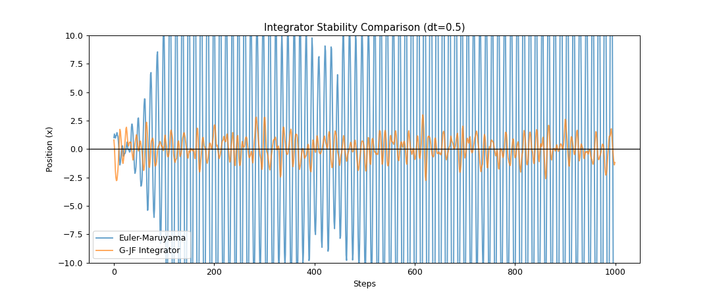
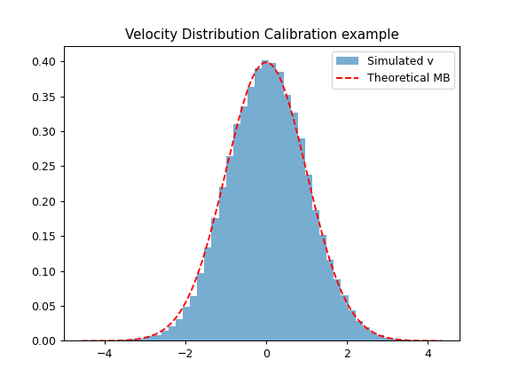
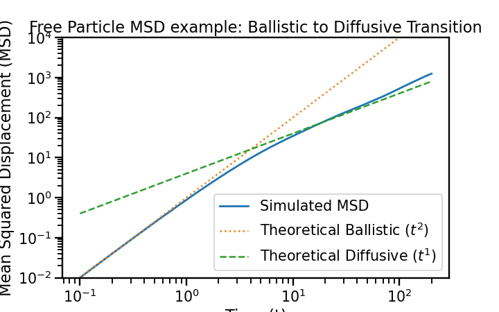

Random Molecular Dynamics and Langevin Equation#
Introduction#

Now we will study systems where there are random fluctuations on the main particle path, due to thermal fluctuatins and the environment it is in.
Brownian Motion#
Microscopic particles suspended in a fluid exhibit erratic motion due to collisions with surrounding molecules.
Examples:
Pollen grains in water
Dust particles in air
Colloidal particles
Molecular diffusion
A fully deterministic simulation of all molecules is often impossible, so we construct an effective stochastic description.
Year |
Key Figure(s) |
Historical Milestone & Impact |
|---|---|---|
1827 |
Observes the erratic motion of pollen grains suspended in water, demonstrating that the phenomenon is physical rather than biological. |
|
1877 |
Suggests that Brownian motion arises from collisions between suspended particles and surrounding fluid molecules. |
|
1900 |
Introduces the mathematics of random walks to model fluctuations in financial markets, laying foundations for quantitative finance. |
|
1905 |
Develops the first quantitative theory of Brownian motion, linking observable particle motion to molecular collisions and providing evidence for atoms. |
|
1906 |
Independently formulates a complementary theoretical description based on random molecular impacts. |
|
1908 |
Recasts Brownian motion as a dynamical equation with deterministic and stochastic forces, introducing the Langevin equation. |
|
1908 |
Performs experiments confirming Einstein’s predictions and obtains an accurate estimate of Avogadro’s number. |
|
1923 |
Provides a rigorous mathematical foundation for continuous-time stochastic processes through the Wiener process. |
The Langevin Equation#
In standard Molecular Dynamics (MD), we solve Newton’s equations (\(F = ma\)). However, to simulate a system at a constant temperature \(T\) or to model a particle in a solvent (like a protein in water), we need to include
A friction force
A random fluctuating force
To do so, we use the Langevin Equation,
Where:
\(F_{ext}(x)\): External forces (e.g., from a potential \(U(x)\)).
\(-\gamma v\): Friction/Drag force (dissipation).
\(\sqrt{2 \gamma k_B T}\hspace{0.5em}\eta(t)\): Stochastic force (fluctuation), where \(\eta(t)\) is Gaussian white noise, which has the following properties:
The standard deviation is \(\sigma^2 = 2 \gamma k_B T\).
Note on software#
Although we are going to implement some of the simulations by ourselves, there are several MD packages worth visiting:
Theoretical approach for a free particle#
The Langevin Equation Definition#
For a free particle of mass \(m\), the equation of motion is:
Dividing the entire equation by \(m\), we eliminate the need for extra constants:
The random force \(\eta(t)\) is Gaussian white noise. The Fluctuation-Dissipation Theorem dictates the following properties:
For the scaled noise term \(A(t) = \frac{\eta(t)}{m}\), the autocorrelation simplifies to:
Solution for Velocity \(v(t)\)#
We start with the first-order linear differential equation:
Multiply by the integrating factor \(e^{\gamma t}\):
By the product rule, the left side is the exact derivative of \(v(t)e^{\gamma t}\):
Integrate both sides with respect to time from \(0\) to \(t\):
Isolating \(v(t)\), we obtain the exact solution for the velocity:
Note
Ensemble average and integral elimination By taking the ensemble average we eliminate the integral due to the noise propertis
Solution for Mean Squared Displacement \(\langle x^2(t) \rangle\)#
We use Langevin’s trick to solve directly for the variance. Start with the equation of motion in terms of position \(x\):
Multiply the entire equation by \(x\):
Substitute the chain rule identities \(x \dot{x} = \frac{1}{2} \frac{d}{dt}(x^2)\) and \(x \ddot{x} = \frac{1}{2} \frac{d^2}{dt^2}(x^2) - \dot{x}^2\):
Take the ensemble average \(\langle ... \rangle\). The noise and position are uncorrelated (\(\langle x \eta(t) \rangle = 0\)), and by the equipartition theorem, the average kinetic energy is \(\langle m \dot{x}^2 \rangle = k_B T\):
Divide by \(m/2\) to clean up the equation, and let \(u(t) = \frac{d}{dt}\langle x^2 \rangle\):
Multiply by the integrating factor \(e^{\gamma t}\):
Integrate from \(0\) to \(t\). Assuming the particle starts at the origin, the initial variance expansion rate is \(u(0) = 0\):
Finally, integrate \(u(t) = \frac{d}{dt}\langle x^2 \rangle\) from \(0\) to \(t\) to find the MSD:
This yields the exact solution for the Mean Squared Displacement:
Limiting Regimes#
We can Taylor expand the exact MSD solution to show the transition between regimes:
1. Short Times (\(t \ll 1/\gamma\)): The Ballistic Regime Using the expansion \(e^{-\gamma t} \approx 1 - \gamma t + \frac{1}{2}\gamma^2 t^2\):
(The particle moves with thermal velocity before friction takes effect).
2. Long Times (\(t \gg 1/\gamma\)): The Diffusive Regime The exponential term \(e^{-\gamma t}\) rapidly decays to zero, leaving:
Where the Einstein diffusion coefficient is \(D = \frac{k_B T}{m \gamma}\). (The particle undergoes a random walk governed by viscous drag).
Velocity Fluctuations and the Role of Noise#
While the average velocity of the particle decays to zero (\(\langle v(t) \rangle = v_0 e^{-\gamma t}\)), the fluctuations around this average do not. These fluctuations are driven entirely by the random thermal noise.
To find the velocity variance, we square our exact solution for \(v(t)\) and take the ensemble average:
Expanding this, the cross-term vanishes because the noise has zero mean (\(\langle A(t') \rangle = 0\)):
Now, we substitute the noise autocorrelation \(\langle A(t') A(t'') \rangle = \frac{2 \gamma k_B T}{m} \delta(t' - t'')\). The Dirac delta function collapses the double integral into a single one (evaluating \(t''\) at \(t'\)):
Evaluating the integral:
Substituting this back yields the exact expression for the velocity variance:
Physical Interpretation (The Fluctuation-Dissipation Balance): This equation beautifully illustrates the competing physical forces:
Dissipation (Friction): The first term \(v_0^2 e^{-2\gamma t}\) shows the particle’s initial kinetic energy being dissipated into the surrounding fluid by the viscous drag \(\gamma\).
Fluctuation (Noise): The second term shows the random kicks of the fluid pumping energy back into the particle.
As \(t \to \infty\), the transient terms decay and the system reaches thermal equilibrium. The variance perfectly settles at:
This recovers the Equipartition Theorem (\(\frac{1}{2}m\langle v^2 \rangle = \frac{1}{2}k_B T\)). The fact that the \(\gamma\) terms perfectly canceled out to leave exactly \(k_B T/m\) is not a coincidence; it is the direct result of defining the noise variance as \(2m\gamma k_B T\). This proves that to maintain equilibrium, the amplitude of the noise (fluctuations) and the strength of the drag (dissipation) must be intrinsically linked.
Future Steps: From Trajectories to Probabilities#
The Langevin equation is a Stochastic Differential Equation (SDE). It describes the precise individual trajectory of a single realization of noise. However, in statistical mechanics, we often care more about the macroscopic behavior of an ensemble of particles.
The next logical step in this theoretical framework is to transition from tracking trajectories to calculating the evolution of probability distributions.
The Fokker-Planck Equation: Instead of solving for \(x(t)\) and \(v(t)\) directly, we can derive a deterministic Partial Differential Equation (PDE) for the probability density function \(P(x, v, t)\). This function describes the probability of finding a particle at position \(x\) with velocity \(v\) at time \(t\). For the Langevin equation, the corresponding Fokker-Planck equation (often called the Klein-Kramers equation) is:
Here, the noise translates into a “diffusion” term in velocity space (\(\dfrac{\partial^2 P}{\partial v^2}\)), while the deterministic forces map to drift terms.
The Overdamped Limit (Smoluchowski Equation): If the friction is very high (\(\gamma \to \infty\)) or the mass is very small (like biological macromolecules in water), the particle’s momentum relaxes almost instantaneously. The velocity is essentially slaved to the forces, and inertia (\(m\dot{v}\)) can be neglected. By adiabatically eliminating the velocity from the Kramers equation, we obtain the Smoluchowski equation, which operates purely in position space: \begin{equation} \frac{\partial P(x,t)}{\partial t} = \frac{\partial}{\partial x} \left( \frac{-F_{ext}(x)}{m\gamma} P(x,t) + D \frac{\partial P(x,t)}{\partial x} \right) \end{equation} where \(D = \dfrac{k_B T}{m\gamma}\).
Computationally, solving the Fokker-Planck equation yields exact, smooth analytical distributions. However, PDEs suffer heavily from the “curse of dimensionality” (they are incredibly hard to solve for multi-particle 3D systems). This is precisely why we rely on numerical Langevin integrators to simulate large systems—sampling millions of trajectories via the Langevin SDE is far more efficient than solving a high-dimensional Fokker-Planck PDE.
Numerical time integration#
We cannot use the standard Verlet/Leapfrog algorithms in this cases, which are simplectic (they preserve phase-space volume) and time reversible, due to the random term ad the friction term in the Langevin equation, which introduce the following consequences:
Friction makes the system non-Hamiltonian (energy is dissipated).
The noise term is technically non-differentiable (Wiener process).
There are some new algorithms that can be implemented:
Algorithm |
Complexity |
Stability |
Accuracy (\(x\)) |
Key Advantage |
Disadvantage |
|---|---|---|---|---|---|
Euler-Maruyama |
Very Low |
Poor |
\(O(\Delta t^{0.5})\) |
Extremely simple to code. |
Unstable; requires tiny time steps; poor energy/temperature control. |
Langevin Velocity Verlet |
Medium |
Good |
\(O(\Delta t^{2})\) |
Familiar to MD users; easy to implement. |
Kinetic energy can be biased depending on how the friction is centered. |
G-JF (Grønbech-Jensen) |
Medium |
Excellent |
\(O(\Delta t^{2})\) |
Exactly reproduces Boltzmann distribution even for large \(\Delta t\). |
Slightly more algebraic overhead in the coefficients. |
BAOAB (Splitting) |
Medium |
High |
\(O(\Delta t^{2})\) |
Best for sampling configuration space (positions). |
Velocity statistics are slightly less accurate than G-JF. |
Different tima-integrators#
A. The Baseline: Euler-Maruyama#
This is the stochastic version of the Forward Euler method:
Where \(R_n\) is a random number from a Normal distribution \(N(0,1)\).
B. The Standard: Modified Velocity Verlet#
Most MD packages (like LAMMPS or GROMACS) use a variation of this. It splits the velocity update into two half-steps to account for the force, then adds the noise.
Pros: It reduces to the standard Verlet if \(\gamma=0\) and \(T=0\).
Cons: Because the friction depends on \(v\), and \(v\) is changing during the step, the “correct” velocity to use for the friction term is ambiguous.
See https://www.sciencedirect.com/science/article/abs/pii/S0301010498002146
C. The Robust Choice: Grønbech-Jensen & Farago (G-JF)#
This is currently the “gold standard” for Langevin simulations. It was designed so that for a harmonic oscillator, the calculated averages \(\langle x^2 \rangle\) are independent of the time step \(\Delta t\). It defines a discrete-time engine where the friction and noise are analytically integrated over the step.
Implementation and Comparison Code#
Implement the euler-maruyama step. Use a external force as \(-x\). Then run the code to check if the algorithms produce the same results.
import numpy as np
# fix random seed for reproducibility
np.random.seed(1)
def euler_maruyama_step(x, v, f, dt, mass, gamma, kT, fext):
# Noise term
noise = np.random.normal(0, 1)
random_force = np.sqrt(2 * gamma * kT * dt) * noise
# Update
# YOUR CODE HERE
pass
return x_new, v_new, f_new
def gjf_step(x, v, f, dt, mass, gamma, kT, fext):
# 1. Calculate coefficients
alpha = (gamma * dt) / (2.0 * mass)
b = 1.0 / (1.0 + alpha)
a = (1.0 - alpha) / (1.0 + alpha)
# 2. Generate random noise (Gaussian)
# Variance is 2 * gamma * kT * dt
noise = np.random.normal(0, np.sqrt(2 * gamma * kT * dt))
# 3. Update Position (uses b)
x_new = x + b * dt * v + (b * dt**2 / (2 * mass)) * f + (b * dt / (2 * mass)) * noise
# 4. We need the force at the NEW position to update velocity
f_new = fext(x_new)
# 5. Update Velocity (on-site velocity)
v_new = a * v + (dt / (2 * mass)) * (a * f + f_new) + (b / mass) * noise
return x_new, v_new, f_new
# Define the force for a FREE PARTICLE (no restoring spring)
def force_free_particle(x):
return 0.0
# (For later: if you want to test the harmonic oscillator again)
def force_harmonic(x):
return -1.0 * x
# Simulation Setup: High Time Step Test
dt = 0.5 # Large dt to test stability
n_steps = 1000
mass, gamma, kT = 1.0, 0.5, 1.0
# Initialize
x_em, v_em, f_em = 1.0, 0.0, -1.0
x_gjf, v_gjf, f_gjf = 1.0, 0.0, -1.0
traj_em = []
traj_gjf = []
for _ in range(n_steps):
x_em, v_em, f_em = euler_maruyama_step(x_em, v_em, f_em, dt, mass, gamma, kT, force_harmonic)
x_gjf, v_gjf, f_gjf = gjf_step(x_gjf, v_gjf, f_gjf, dt, mass, gamma, kT, force_harmonic)
traj_em.append(x_em)
traj_gjf.append(x_gjf)
---------------------------------------------------------------------------
NameError Traceback (most recent call last)
Cell In[2], line 14
10 traj_em = []
11 traj_gjf = []
12
13 for _ in range(n_steps):
---> 14 x_em, v_em, f_em = euler_maruyama_step(x_em, v_em, f_em, dt, mass, gamma, kT, force_harmonic)
15 x_gjf, v_gjf, f_gjf = gjf_step(x_gjf, v_gjf, f_gjf, dt, mass, gamma, kT, force_harmonic)
16 traj_em.append(x_em)
17 traj_gjf.append(x_gjf)
Cell In[1], line 15, in euler_maruyama_step(x, v, f, dt, mass, gamma, kT, fext)
11 # Update
12 # YOUR CODE HERE
13 pass
14
---> 15 return x_new, v_new, f_new
NameError: name 'x_new' is not defined
#%matplotlib widget
import matplotlib.pyplot as plt
# Plotting comparison
plt.figure(figsize=(12, 5))
plt.plot(traj_em, label='Euler-Maruyama', alpha=0.7)
plt.plot(traj_gjf, label='G-JF Integrator', alpha=0.7)
plt.axhline(0, color='black', lw=1)
plt.title(f"Integrator Stability Comparison (dt={dt})")
plt.ylabel("Position (x)")
plt.xlabel("Steps")
plt.legend()
plt.ylim(-10, 10) # EM often explodes
plt.savefig("fig/integrator_comp.png", dpi=90)
plt.show()
{kind=link}

Exercise 10 (The “Explosion” Point)
In Numerical Analysis, algorithms have a stability limit.
Gradually increase
dtin the simulation above (try 0.1, 0.5, 1.0, 2.0).What is the role of the random generator seed?
At what
dtdoes the Euler-Maruyama algorithm “explode” (values go to infinity)?Does the G-JF algorithm explode at the same point, or does it remain bounded?
Why is stability crucial when simulating complex molecules like proteins where forces can be very high?
Calibration and testing#
It is important to always test the results. In this case, we can test the dynamics in several ways:
# Run a long G-JF simulation
import numpy as np
steps = 50000
x, v, f = 0.0, 0.0, 0.0
x_list = np.zeros(steps)
v_list = np.zeros(steps)
f_list = np.zeros(steps)
for ii in range(steps):
x, v, f = gjf_step(x, v, f, 0.1, 1.0, 0.5, 1.0, force_harmonic)
x_list[ii] = x
v_list[ii] = v
f_list[ii] = f
Maxwell-Boltzmann distribution#
A good test of a Langevin integrator is if it reproduces the Maxwell-Boltzmann distribution.
# Plot Histogram vs Theory
# Histogram
# YOUR CODE HERE
pass
v_range = np.linspace(min(v_list), max(v_list), 100)
# Theoretical Maxwell-Boltzmann in 1D: sqrt(m / 2*pi*kT) * exp(-mv^2 / 2kT)
# YOUR CODE HERE
pass
plt.plot(v_range, theory, 'r--', label='Theoretical MB')
plt.title("Velocity Distribution Calibration example")
plt.legend()
plt.savefig("fig/histo.png", dpi=90)
plt.show()
{kind=link}

The Equipartition Theorem#
A key “calibration” test is to check if the simulation respects the Equipartition Theorem:
(in 1D).
Calculate the average kinetic energy from your trajectory and compare it to \(\frac{1}{2} kT\).
kinetic_energies = 0.5 * mass * v_list**2
avg_ke = np.mean(kinetic_energies)
expected_ke = 0.5 * kT
print(f"Measured <KE>: {avg_ke:.4f}")
print(f"Expected <KE>: {expected_ke:.4f}")
print(f"Error: {abs(avg_ke - expected_ke)/expected_ke * 100:.2f}%")
Mean Squared Displacement (MSD)#
How does the particle explore space? For a free particle (\(F_{ext}=0\)):
Ballistic Regime (Short times): \(MSD(t) \sim t^2\)
Diffusive Regime (Long times): \(MSD(t) \sim 2Dt\)
Run the simulation for a Free Particle (\(F_{ext} = 0\)).
Calculate the MSD: \(MSD(\tau) = \langle (x(t+\tau) - x(t))^2 \rangle\).
Plot it on a Log-Log scale. Do this for both integration schemes.
import seaborn as sns
sns.set_context('talk')
# Run a long G-JF simulation for a FREE PARTICLE
steps = 50000
dt_sim = 0.1
mass, gamma, kT = 1.0, 0.5, 1.0
x, v, f = 0.0, 0.0, 0.0
x_list = np.zeros(steps)
for ii in range(steps):
x, v, f = gjf_step(x, v, 0.0, dt_sim, mass, gamma, kT, force_free_particle)
x_list[ii] = x
# Calculate MSD
def calculate_msd(pos):
n = len(pos)
# We only need a fraction of the points to see the regimes
# (MSD gets noisy at large tau anyway)
max_tau = 2000
msd = np.zeros(max_tau)
for tau in range(1, max_tau + 1):
diffs = pos[tau:] - pos[:-tau]
msd[tau-1] = np.mean(diffs**2)
return msd
msd = calculate_msd(x_list)
# --- NEW PLOTTING BLOCK ---
import matplotlib.pyplot as plt
# Create a true time axis (tau_index * dt)
times = np.arange(1, len(msd) + 1) * dt_sim
plt.figure(figsize=(8, 5))
plt.loglog(times, msd, label="Simulated MSD")
# Theoretical Ballistic line: MSD = (kT/m) * t^2
ballistic_theory = (kT / mass) * times**2
plt.loglog(times, ballistic_theory, ':', linewidth=2, label="Theoretical Ballistic ($t^2$)")
# Theoretical Diffusive line: MSD = 2 * D * t
# Where Diffusion coefficient D = kT / gamma
D = kT / gamma
diffusive_theory = 2 * D * times
plt.loglog(times, diffusive_theory, '--', linewidth=2, label="Theoretical Diffusive ($t^1$)")
plt.legend()
plt.xlabel("Time (t)")
plt.ylabel("Mean Squared Displacement (MSD)")
plt.title("Free Particle MSD example: Ballistic to Diffusive Transition")
plt.ylim(1e-2, 1e4) # Adjust viewing window
plt.savefig("fig/msd.png", dpi=90)
plt.show()
{kind=link}

Exercises#
BBK Integrator (Brünger–Brooks–Karplus)#
Implement and test the BBK integrator
Energy “conservation”#
Plot \(E(t) = K + U\). What dou you see? is constant? How does it depends on \(\gamma\)?
Underdamped vs Overdamped#
The parameter \(\gamma\) determines the “personality” of the dynamics.
Low \(\gamma\) (Underdamped): The particle oscillates like a real oscillator but with occasional kicks.
High \(\gamma\) (Overdamped): The particle looks like a random walk; its velocity resets almost instantly.
Phase Space Exploration#
Create a loop to simulate three different \(\gamma\) values (0.01, 1.0, 10.0) and plot their Phase Space (\(v\) vs \(x\)).
Effective temperature#
Compare measured temperature:
to true temperature, as a function of time.
Sampling a Double-Well Potential#
Langevin dynamics is often used to study barrier crossing. Use the following potential: $\(U(x) = a x^4 - b x^2\)$
Modify the
f_newto the correct form.Set \(a=1, b=2\).
Observe the trajectory. Does the particle stay in one well or jump between them?
How does increasing the temperature
kTaffect the jumping frequency?Look for the
Kramers transition
Time correlation Function#
Compute $\( C_v(t) = \langle v(0) v(t) \rangle, \)$ and check if it decays exponentially, and the relationship with the exponential constant and the physicl parameters.
Future topics#
MD Software: lammps, gromacs, OpenMM, …
Fokker-Planck equation
Ornstein-Uhlenbeck process
Andersen Thermostat